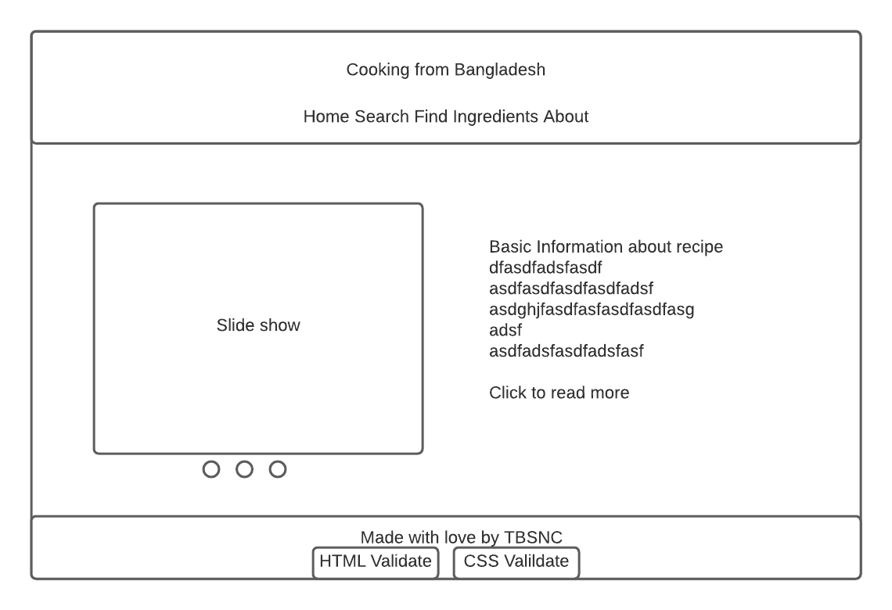
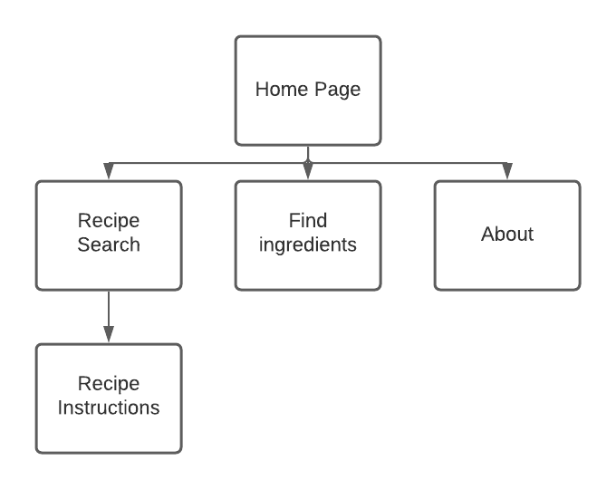

The website will allow the user to find various Bengali recipes.
The intended userbase will be people who are interested in discovering food from other cultures.
The website will contain a home page displaying featured recipes, a search page for finding recipes, recipe instruction page, where to get ingredients page, and an about page.
Client Information
Name: [private]
Organzation: Triangle Bangladesh Society of North Carolina
Email: [private]
Phone: [private]
Wireframe

Website Wireframe
Sitemap

Sitemap
Page Design
Home Page
Purpose: To view featured recipes
Audience: Public
Content: Interactive slideshow of featured recipes and their descriptions
Actions: User can click on recipe image in slideshow or the read more button in the description to navigate to the recipe page
Recipe Search
Purpose: To search for different recipes
Audience: Public
Content: Search box along with search results of recipes
Datafield: Search box, No validation needed
Actions: User can type in the search box to find recipes and click the one the want
Recipe Instructions
Purpose: To show the steps in making a recipe
Audience: Public
Content: Recipe image and instructions
Actions: User can view the instructions in the recipe
Find Ingredients
Purpose: To show where the user can find ingredients for the recipes
Audience: Public
Content: Various stores and embedded Google Maps location next to them
Actions: User can view different stores and use the embedded Google Maps to find directions
About Page
Purpose: To show the user about the website and give more information on TBSNC (the sponsor)
Audience: Public
Content: Information about TBSNC and hyperlinks to website, facebook, and email
Actions: User can use the information to find more about TBSNC or contact them
Dynamic Functionality
Recipe slidehow on Homepage - To display featured recipes - Example: https://pierres.com/
Find ingredients page - Show stores in different cities - Example: https://www.homedepot.com/l/search/ (note I will be using a dropdown instead of a searchbox)